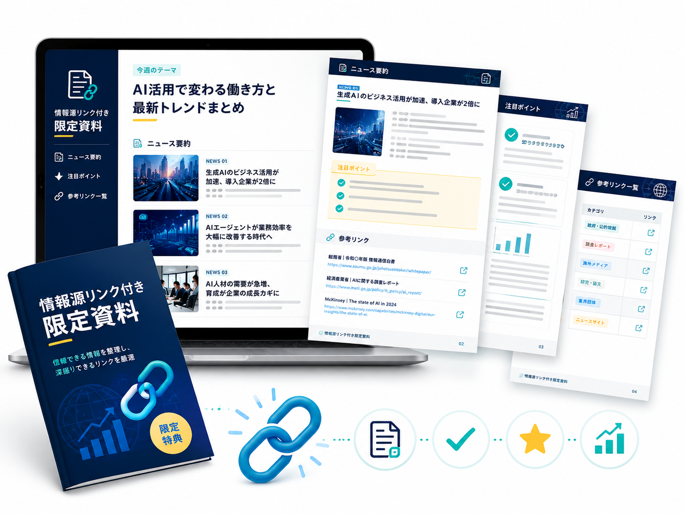

🗂️
火曜・金曜の
中間共有
週前半・週後半のAI情報を、重要トピックに絞って共有します。一気に追うのではなく、週の途中で少しずつ流れを把握できるため、土曜朝には「知らない話ばかり」になりません。
コメキャリのSlack、またはセラピストドットコムでも受け取れます
PARTICIPATION BENEFITS
AI情報は、気づいたらどんどん流れていきます。だからこそ、1週間分をまとめて詰め込むのではなく、週の途中で整理し、土曜朝に理解を深め、あとから資料やPodcastで復習できる仕組みにしています。
3 BENEFITS
週前半・週後半のAI情報を、重要トピックに絞って共有します。一気に追うのではなく、週の途中で少しずつ流れを把握できるため、土曜朝には「知らない話ばかり」になりません。
コメキャリのSlack、またはセラピストドットコムでも受け取れます
紹介したニュース・ツール・公式情報・参考記事を、リンク付きで整理してお渡しします。あとから自分で深掘りしたり、職場で共有したりする際の根拠として使えます。
参加後のアンケートに回答した方へPDFでお渡し
過去回の勉強会音声をPodcast形式で聴けます。参加できなかった週も、移動中や作業中にキャッチアップできるため、学びが途切れません。
どなたでも視聴できます
MATERIALS
AIの情報は、出どころが分からないまま流れてくることが少なくありません。振り返り資料では、紹介した内容の出典や参考リンクをあわせて載せています。
その場で聞いて終わりにせず、自分で読み返し、判断のもとにできる形にまとめているのが、この資料の役割です。

HOW TO GET
特典によって受け取り方が異なります。まずは無料の朝活からご参加ください。
| 特典 | 受け取り方 | 費用 |
|---|---|---|
| 振り返り資料（PDF） | 朝活またはセミナーに参加し、終了後のアンケートに回答 | 無料 |
| Podcastバックナンバー | Podcastページからいつでも視聴できます | 無料 |
| 火曜・金曜の中間共有 | コメキャリのSlack「生成AI活用部屋」、またはセラピストドットコムからも受け取り可能 | 無料 |